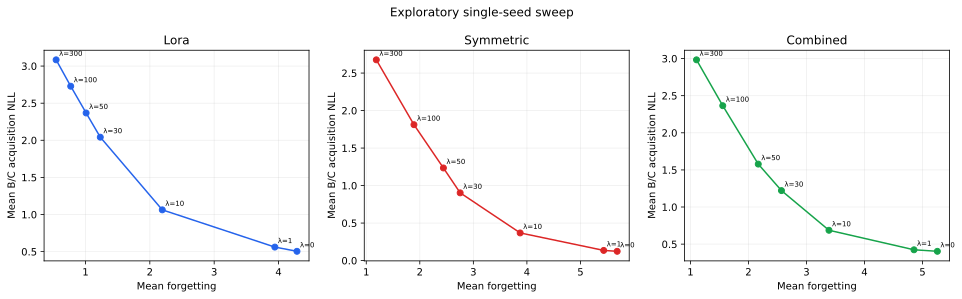
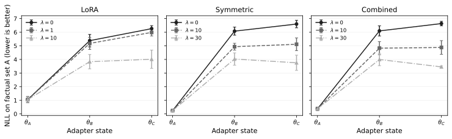
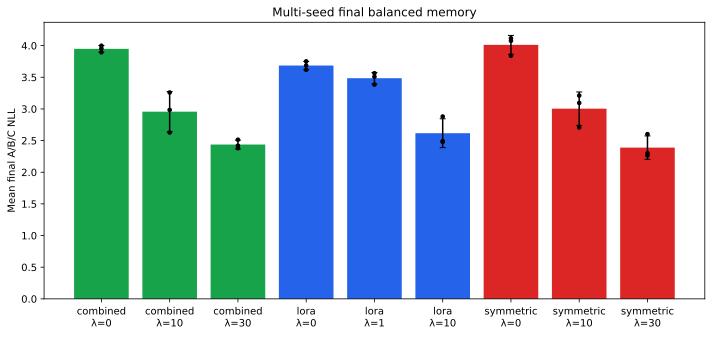
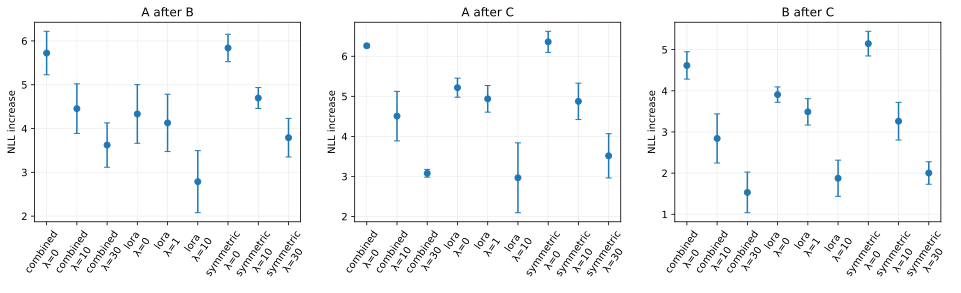
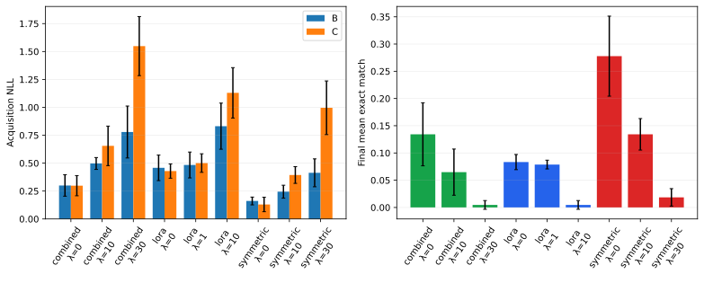
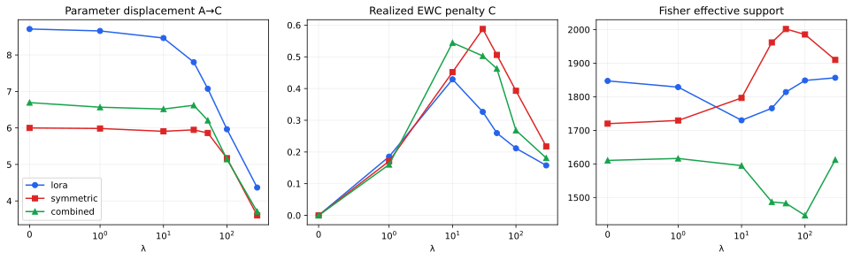

Research Project 02 · Research manuscript · 2026
Stability–Plasticity Control in Parameter-Efficient Continual Factual Learning: EWC across Linear, Quadratic, and Combined Low-Rank Adapters
How does regularization strength control stability and plasticity when the same continual factual-learning protocol is implemented through different parameter-efficient adapter geometries?
Abstract
Sequential parameter-efficient adaptation must balance acquisition of new information against retention of earlier updates. We study this problem in a no-replay sequence of three disjoint synthetic factual sets using a frozen GPT-2 Small backbone and three adapters with 6,144 trainable parameters: LoRA, a symmetric factorized quadratic adapter, and a Combined linear–quadratic adapter. Consolidation uses online Elastic Weight Consolidation (EWC) with an empirical diagonal Fisher over adapter parameters. A seven-point sweep on seed 42 selects architecture-specific coefficient ranges; the selected settings are then evaluated on two additional seeds, with descriptive aggregates over all three. Stronger EWC consistently reduces forgetting while increasing new-fact acquisition NLL. Intermediate coefficients improve final balanced memory relative to the execution-matched λ=0 control in every tested candidate configuration and each paired seed. The transition scale depends on adapter parameterization: LoRA responds at lower coefficients, Symmetric remains more plastic under moderate regularization, and Combined does not systematically dominate either component architecture. Increasing EWC strength also reduces parameter displacement, which is positively associated with forgetting. Under the evaluated setting, these findings support treating consolidation strength and adapter geometry as coupled design choices. Scope is limited to GPT-2 Small, one placement, three 12-fact sets, and two out-of-selection replication seeds.
Continual learning · EWC · PEFT · LoRA · quadratic adapters · factual learning · GPT-2
Introduction
Sequential parameter-efficient adaptation must incorporate new factual associations without erasing earlier updates. The study isolates this problem in a no-replay sequence of three disjoint synthetic fact sets. It compares three adapters with the same trainable-parameter count but different parameter-to-function maps: linear LoRA, a symmetric factorized quadratic adapter, and their Combined form.
A full seven-point λ sweep on seed 42 identifies candidate operating regions. The selected coefficients are then evaluated on two unseen seeds, 123 and 456. The three-seed summaries therefore combine one selection seed with two out-of-selection replications and are descriptive rather than inferential.
Mathematical formulation
Adapter architectures
For row-vector activation \(x\), frozen projection \(W\), and bias \(b\), the adapted projection is \(y=xW+b+\Delta y(x)\). The backbone remains frozen.
\[\Delta y_L=\frac{\alpha}{r}(xA)B.\]
LoRA is input-linear, with \(J_L=(\alpha/r)AB\) and adapter-only Hessian \(H_L=0\).
\[\Delta y_S=\frac{\alpha}{r}\big[(xU)\odot(xU)\big]P.\]
For output coordinate \(j\), \(\Delta y_{S,j}=xQ_jx^T\), where
\[Q_j=\frac{\alpha}{r}\sum_{k=1}^r P_{kj}u_ku_k^T,\qquad J_S(x)=2\frac{\alpha}{r}U\operatorname{diag}(xU)P,\qquad H_{S,j}=2Q_j.\]
The Combined adapter sums independent branches:
\[\Delta y_C=\frac{\alpha_L}{r_L}(xA)B+\frac{\alpha_S}{r_S}\big[(xU)\odot(xU)\big]P.\]
Continual factual-learning protocol
Training follows \(A\rightarrow B\rightarrow C\) without replay. Absolute losses are evaluated at each phase boundary. Forgetting is defined by
\[F_{A\rightarrow B}=L_A(\theta_B)-L_A(\theta_A),\quad F_{A\rightarrow C}=L_A(\theta_C)-L_A(\theta_A),\quad F_{B\rightarrow C}=L_B(\theta_C)-L_B(\theta_B).\]
\[F_{\mathrm{mean}}=\frac{F_{A\rightarrow B}+F_{A\rightarrow C}+F_{B\rightarrow C}}{3},\qquad L_{\mathrm{new}}^{\mathrm{acq}}=\frac{L_B(\theta_B)+L_C(\theta_C)}{2}.\]
Lower NLL and lower forgetting are better. Zero forgetting indicates no degradation from the post-acquisition reference; a negative value would indicate improvement.
Online empirical diagonal-Fisher EWC
\[\mathcal L_{\mathrm{total}}=\mathcal L_{\mathrm{current}}+\frac{\lambda}{2}\sum_i F_i(\theta_i-\theta_i^*)^2.\]
After phase A, the method stores \(\theta_A^*\) and estimates \(F_A\). After B, it updates the online Fisher as \(F_{AB}=\gamma F_A+F_B\) with \(\gamma=1\), and uses the post-B reference during C. Fisher and reference states are computed even at λ=0; the regularization term and its gradient are then exactly zero.
Stability–plasticity control mechanism
The controlled variable is EWC strength λ applied to one shared adapter throughout the three phases. Increasing λ raises resistance to movement in coordinates assigned high importance by the empirical diagonal Fisher. The experiment tests whether the same nominal coefficient induces the same functional trade-off in different adapter parameterizations.
| Method | Rank | Scale | Trainable parameters |
|---|---|---|---|
| LoRA | r=4 | α/r=1 | 6,144 |
| Symmetric | r=4 | α/r=1 | 6,144 |
| Combined | rL=2, rS=2 | αL/rL=αS/rS=2 | 6,144 |
Parameter count is matched, but branch-wise scaling and functional geometry are not. Combined therefore couples geometry, rank allocation, and output scale.
Experimental methodology
- Backbone
- GPT-2 Small, fully frozen.
- Placement
- Zero-based block 0,
attn.c_proj. - Data
- Three deterministic, globally disjoint sets A/B/C; 12 synthetic identifier–code facts per set; no replay.
- Schedule
- 2,500 optimizer steps per phase; 7,500 steps per run.
- Optimizer
- AdamW, learning rate 3×10−4, β=(0.9, 0.999), ε=10−8, zero weight decay, gradient clipping 1.0, no scheduler.
- Execution
- FP16, sequence length 64, microbatch 4, gradient accumulation 1, effective batch 4.
- Fisher
- Adapter-only empirical diagonal estimate from 12 deterministic examples after A and B; γ=1.
- Sweep
- λ∈{0,1,10,30,50,100,300} on selection seed 42.
- Replication
- LoRA λ∈{0,1,10}; Symmetric and Combined λ∈{0,10,30} on seeds 42, 123, 456.
- Metrics
- Target NLL, geometric mean correct-answer token probability, exact token match, paraphrase metrics, forgetting, balanced final NLL, parameter displacement, Fisher structure, and realized EWC cost.
Prompt and padding labels are masked with −100, so only target tokens contribute to training loss. Exact generation is greedy, with no text normalization; the generated suffix must exactly match the target token IDs.
Results
Exploratory experiments
Across all three architectures, increasing λ reduces forgetting and raises new-fact acquisition NLL. LoRA moves toward stability at lower coefficients; Symmetric retains stronger plasticity over the moderate range; Combined occupies an intermediate region without systematic dominance.

Multiseed confirmation
| Method | λ | Mean forgetting | New acquisition NLL | Final balanced NLL | Correct-answer probability | Exact match |
|---|---|---|---|---|---|---|
| LoRA | 0 | 4.4847 ± 0.3475 | 0.4435 ± 0.0853 | 3.6856 ± 0.0662 | 0.2285 ± 0.0129 | 0.0833 ± 0.0139 |
| LoRA | 1 | 4.1844 ± 0.4172 | 0.4920 ± 0.0963 | 3.4855 ± 0.0915 | 0.2173 ± 0.0146 | 0.0787 ± 0.0080 |
| LoRA | 10 | 2.5429 ± 0.6715 | 0.9805 ± 0.2138 | 2.6169 ± 0.2279 | 0.1510 ± 0.0165 | 0.0046 ± 0.0080 |
| Symmetric | 0 | 5.7811 ± 0.0958 | 0.1454 ± 0.0466 | 4.0117 ± 0.1490 | 0.2979 ± 0.0183 | 0.2778 ± 0.0735 |
| Symmetric | 10 | 4.2774 ± 0.3552 | 0.3189 ± 0.0660 | 3.0044 ± 0.2639 | 0.2465 ± 0.0133 | 0.1343 ± 0.0289 |
| Symmetric | 30 | 3.1026 ± 0.4115 | 0.7046 ± 0.1744 | 2.3888 ± 0.1854 | 0.1782 ± 0.0208 | 0.0185 ± 0.0160 |
| Combined | 0 | 5.5329 ± 0.2459 | 0.2991 ± 0.0922 | 3.9493 ± 0.0523 | 0.2553 ± 0.0206 | 0.1343 ± 0.0578 |
| Combined | 10 | 3.9336 ± 0.4809 | 0.5758 ± 0.1149 | 2.9572 ± 0.3171 | 0.1996 ± 0.0231 | 0.0648 ± 0.0424 |
| Combined | 30 | 2.7443 ± 0.3321 | 1.1637 ± 0.2463 | 2.4373 ± 0.0694 | 0.1259 ± 0.0134 | 0.0046 ± 0.0080 |

Every non-zero candidate reduces mean forgetting, increases acquisition NLL, and improves final balanced NLL relative to its execution-matched λ=0 control in all three paired seeds. The direction is also reproduced on both out-of-selection seeds. These are descriptive three-seed results, not a claim of population-level significance.
Quantitative results and balanced memory



Forgetting and exact-generation analysis
Intermediate coefficients give the lowest sampled balanced final NLL, while exact generation declines more sharply. At the strongest replicated candidates, final balanced NLL is 2.6169±0.2279 for LoRA λ=10, 2.3888±0.1854 for Symmetric λ=30, and 2.4373±0.0694 for Combined λ=30. Their corresponding exact-match means are 0.0046, 0.0185, and 0.0046.

Mechanistic analysis
Stronger EWC generally accompanies smaller cumulative adapter displacement. Across the seven-point sweep, displacement and forgetting are positively associated within every method, but the analysis is coordinate dependent and does not establish causality.

Discussion
The transition scale differs across architectures, so λ cannot be treated as an architecture-independent consolidation measure. EWC constrains parameter coordinates, whereas behavior depends on the parameter-to-function map. Reparameterizations can preserve adapter functions while changing Euclidean displacement and diagonal Fisher values.
NLL and exact generation answer different questions. Moderate consolidation can improve likelihood across all three fact sets while weakening exact acquisition of the newest targets. Hard-consolidation controls further show that bit-identical old adapter tensors do not guarantee functional retention when later components remain active.
Limitations
Scope. The evidence is limited to GPT-2 Small, one placement, three 12-fact synthetic sets, a three-phase no-replay sequence, a diagonal empirical Fisher estimated from 12 examples per consolidation point, γ=1, a sparse λ grid, and two out-of-selection replication seeds. Grow-unfrozen and hard-consolidation controls reach 18,432 active parameters and are mechanistic context rather than parameter-matched competitors.
Conclusions
Under the evaluated protocol, online EWC provides a controllable stability–plasticity trade-off. Its effective scale depends on adapter parameterization, and intermediate coefficients produce the strongest sampled balanced-memory regimes. Combined does not systematically dominate the single-family adapters. The results support joint selection of adapter geometry and consolidation strength, while larger models, realistic fact streams, more placements, and direct controls over branch scaling remain necessary for broader generalization.
Download and reproducibility
Code and data
Confirmation aggregates · Exploratory sweep · Retention losses
References
- Kirkpatrick et al. (2017). “Overcoming catastrophic forgetting in neural networks.” PNAS 114(13):3521–3526. doi:10.1073/pnas.1611835114.
- Hu et al. (2022). “LoRA: Low-Rank Adaptation of Large Language Models.” ICLR. arXiv:2106.09685.
- Radford et al. (2019). “Language Models are Unsupervised Multitask Learners.” OpenAI Technical Report.
- Houlsby et al. (2019). “Parameter-Efficient Transfer Learning for NLP.” ICML, PMLR 97:2790–2799.
- Li and Liang (2021). “Prefix-Tuning: Optimizing Continuous Prompts for Generation.” ACL-IJCNLP, 4582–4597. doi:10.18653/v1/2021.acl-long.353.
- Lester, Al-Rfou, and Constant (2021). “The Power of Scale for Parameter-Efficient Prompt Tuning.” EMNLP, 3045–3059. doi:10.18653/v1/2021.emnlp-main.243.
- Ke and Liu (2022). “Continual Learning of Natural Language Processing Tasks: A Survey.” arXiv:2211.12701.
- Biesialska, Biesialska, and Costa-jussà (2020). “Continual Lifelong Learning in Natural Language Processing: A Survey.” COLING, 6523–6541. doi:10.18653/v1/2020.coling-main.574.
- Meng et al. (2022). “Locating and Editing Factual Associations in GPT.” NeurIPS 35. arXiv:2202.05262.
- Meng et al. (2023). “Mass-Editing Memory in a Transformer.” ICLR. arXiv:2210.07229.
- Mitchell et al. (2022). “Fast Model Editing at Scale.” ICLR. arXiv:2110.11309.
- Mitchell et al. (2022). “Memory-Based Model Editing at Scale.” ICML, PMLR 162:15817–15831. arXiv:2206.06520.
- Wang et al. (2024). “Knowledge Editing for Large Language Models: A Survey.” ACM Computing Surveys 57(3), Article 59. doi:10.1145/3698590.
- Zhang et al. (2024). “A Comprehensive Study of Knowledge Editing for Large Language Models.” arXiv:2401.01286.